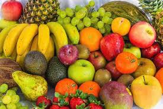

Owoce i Warzywa
Pod względem botanicznym dzielimy je w zależności od tego, z której części rośliny pochodzą. Owoce rozwijają się z kwiatów, a inne części roślin są nazywane jako warzywa. Innymi słowy, owoce w większości zawierają nasiona, a warzywa mogą pochodzić z korzeni, łodyg i liści.
